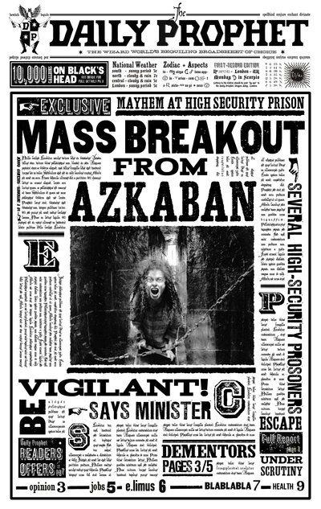

Our Chronicle
Founded in a dusty corner of a forgotten library, The Content Prophet began with a simple mission: to bring a touch of magic to the mundane world of digital marketing. We believe that every brand has a story waiting to be told, a narrative that can enchant and engage. Our scribes and seers are masters of their craft, using ancient arts and modern technologies to create content that doesn't just get seen—it gets remembered.
We are more than just marketers; we are storytellers, strategists, and sorcerers of the written word. We delve into the heart of your brand to uncover its unique magic, brewing potent strategies that resonate with your desired audience and stand the test of time.
